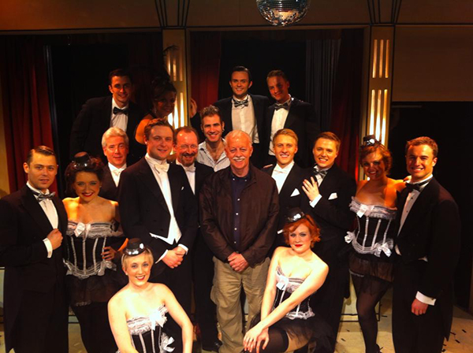
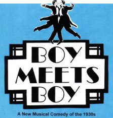

|
REVIEWS OF THE U.K. PREMIERE OF BOY MEETS BOY  “A timeless classic – the best musical comedy I have seen for a long time!” “Say it loud, say it proud, it’s a hit!” “A mystery why this funny, charming, tuneful musical is not better-known. Music that channels Irving Berlin, lyrics with witty facility of Cole Porter. One of those rare ‘hidden gems’ that genuinely shines!” “Homage to romantic screwball screen musicals with a sharp, drolly subversive twist. Never has a rebuke to intolerance been delivered with such nonchalant light-heartedness, or a political point been made with such sweet-natured implicitness…the un-jaded freshness of the material - an unexpected Christmas treat.” “Bill Solly & Donald Ward create a parallel universe…its themes become universal. Some songs are almost Cole Portery. Funny, silly and, with gay marriage on the horizon, slyly topical!” “Altogether delightful…consistently beguiling! What’s lovely in Boy Meets Boy is the total lack of fuss made by a piece that takes gay marriage in its stride – and this from a 1975 musical, no less!” “Disarming as it is charming…Unexpectedly touching love ballads… buoyant wit. Deserves further exposure. Hard to beat!” “Dear Noel and Cole, it seems you have spawned some offspring. Bill Solly’s lyrics are wry, witty, set to jaunty, catchy and occasionally melancholy tunes that linger like the smell of caviar under the fingernails!” “A winning conceit. In 1975 this lithe blasé vision of an alternative reality must have felt subversive. The surprise is that it still does. Songs are buoyant and seductive. Exactly the sort of show that filmmakers should be lining up to rescue and adapt.” “Sparkling musical comedy - impeccable flair. Solly’s music and witty lyrics pay affectionate homage to the likes of Porter and Berlin. There is an unfailing sense of optimism about this show that makes it one of the most pertinent revivals of the year!” “Delightful - a charming musical comedy, equally full of passion and laughs! Witty lines. Run deserves to be wildly successful.” “This delightful show is 37 years old. What a treat we have been missing! Delicious story, splendid songs. A well-drilled ensemble packs the stage with more vitality than the West End has seen in ages! “This is a fine romance! Sparkling, tuneful score and sharp dialogue and lyrics. Endlessly hummable, witty and clever songs. At a time when gay marriage is high on the news agenda, it seems surreal, but also completely beguiling, that in 1975 Solly & Ward should have anticipated it so delightfully.” “Hugely fun – catchy songs – laugh-out-loud lyrics – unashamedly heart-warming! Its frothiness is joyous!” “Clever – great score, good book, delightful show!” “A long overdue London outing – charming and light-hearted romantic comedy, with catchy tunes – an entertaining and highly enjoyable experience…Feels both timeless and modern, with an array of often very funny songs. Boy Meets Boy deserves a much bigger audience.” “The story is simple but never trite, the music is genuinely hummable, and are there are some really funny moments – laugh-out loud funny. A real, genuine delight of a show!” “Charming, fun, and thoroughly entertaining. Solly’s musical score remains excellent with devilishly witty lyrics throughout. Everyone left smiling.” “This gem of a show… funny, clever and heart-warming with some beautiful tunes and great lyrics.” “Hilariously written, a vibrant array of witty songs and catchy tunes that audiences will love and laugh to. Definitely a must for musical lovers." “First produced off Broadway in the 70s and hasn’t been seen since – a crying shame, as it is very charming with pretty tunes, witty dialogue and lyrics. An evening of sheer enchantment!” “Delightful musical comedy –sweet, lovable and original story. Catchy music and lyrics by Bill Solly wonderfully reminiscent of the golden age of musical theatre. Joyous old-fashioned love story with a beautiful score!” “An unexpected gem of a musical. The score is varied in style and form, the lyrics clever, and the script highly intelligent and very funny. Both the script and lyrics have elements of Wilde’s wit and Coward’s charm. A festive treat – highly recommended!” “An absolute knock-out success – this is how you do romantic comedy! Biting one-liners and asides sparkle like diamonds. Bill Solly’s love songs call to mind the likes of Cole Porter and Richard Rodgers. I've rarely been prouder or happier in leaving a theatre!” “The laughs come thick and fast! A thoroughly entertaining watch that only leaves us thirsty for more!” “Dazzling pastiche 1930s musical comedy…couldn’t be more fun! Good jokes, great lyrics and tunes!” “Extravagantly lovable London delight! Many frolicsome, touching and memorable songs! A glorious tinderbox of charm that will not fail to make smile meet face.” “The USA and UK governments plus the Anglican Church should march down to see this production and maybe then the need for debate would be eliminated. The show just whizzes along! The tuneful music is yet another trimming on the icing of this delectable cake!” “This is a musical that restores the original meaning to gay! Delightful thirties-influenced music – a treat!” “Skilfully plotted by Bill Solly & Donald Ward… Many numbers where ever-clever but never tricksy rhymes elicit a silent chuckle as they recall a witty elegance redolent of Cole Porter – the score is rich in melodic invention throughout. Delicious entertainment from beginning to end!” |
 | |||||||